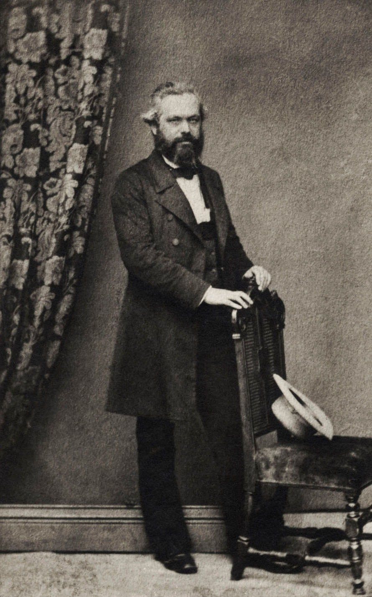

01Философ в среде младогегельянцев
В студенческие годы Маркс писал стихи, пробовал драматическую и сатирическую прозу. Самостоятельной литературной карьеры из этих опытов не возникло. Существеннее для будущего публициста оказалось знакомство с младогегельянской средой Берлина, где литературную, религиозную и философскую критику связывали с общественными вопросами.
Карл Маркс родился в 1818 году в Трире. Он изучал право и философию в Бонне и Берлине, где вошёл в кружок младогегельянцев, к которому принадлежали Бруно Бауэр и Адольф Рутенберг. В 1841 году в Йене он получил степень доктора философии за работу о различии натурфилософии Демокрита и Эпикура. Академическая карьера не сложилась: правительство Пруссии ограничивало преподавание радикальных философов, и Бауэр был лишён права преподавать в 1842 году.
В этой ситуации публицистика стала единственным пространством, где можно было обсуждать общественные вопросы. Журналы и газеты младогегельянцев, в первую очередь Hallische Jahrbücher, а позднее Deutsche Jahrbücher Арнольда Руге, были главными площадками философской критики.
02Рейнская газета: школа политической журналистики
Rheinische Zeitung начала выходить в Кёльне 1 января 1842 года. Её финансировали рейнские предприниматели, настроенные либерально. Они хотели газету, которая отстаивала бы интересы промышленной буржуазии Рейнской провинции перед консервативным прусским правительством. Маркс стал сотрудником газеты весной 1842 года, а в октябре занял место главного редактора.
Его ранние статьи для газеты посвящены конкретным вопросам. В материалах о дебатах шестого Рейнского ландтага о свободе печати (1842) он критиковал цензуру как институт, который делает слово зависимым от мнения чиновника. В статье о краже леса он рассмотрел закон, который превращал сбор хвороста бедняками в уголовное преступление, и впервые поставил вопрос о материальных интересах, стоящих за правовыми формами. Статья в защиту мозельских виноделов показала нужду крестьян как социальную проблему.
Под руководством Маркса газета расширила тираж и усилила политическую остроту. Она не принимала публикаций радикальных берлинских литераторов, которые, по мнению редактора, больше кокетничали эпатажем, чем анализировали действительность. Это показывает его раннюю позицию: критика должна опираться на факты и на конкретные условия, а не на лозунги.
03Закрытие газеты
Прусское правительство, к тому же получавшее протесты из Петербурга по поводу статей о России, добивалось усиления контроля. В январе 1843 года принято решение закрыть газету с 1 апреля. Маркс ушёл из редакции в марте, не дожидаясь закрытия, надеясь, что его отставка сохранит издание. Этого не произошло.
Опыт цензуры и опыт столкновения с экономическими интересами владельцев дали Марксу уверенность в том, что вопрос свободы печати связан с вопросом общественного устройства. Эту мысль он развил в работах 1843 – 1844 годов.
04Переписка с Руге
Весной и летом 1843 года Маркс жил в Крейцнахе, а затем планировал издание журнала за границей вместе с Арнольдом Руге. Руге был философом-гегельянцем, издателем Deutsche Jahrbücher, из Саксонии вынужденным уехать после запрета журнала. Из-за цензуры они решили издавать журнал во Франции.
Письма, которыми обменивались Маркс, Руге и Фейербах в течение 1843 года, были опубликованы в первом (и единственном) сдвоенном выпуске Deutsch-Französische Jahrbücher в Париже в феврале 1844 года под названием "Переписка 1843 года". В публикации Маркс формулирует программу: нужна беспощадная критика всего существующего, не боящаяся своих результатов и столкновения с властью.
Те же письма показывают разочарование прусским порядком. В посланиях Маркса есть мотив "мира филистеров": он говорит об апатичном немецком обществе, где свободного человека нет. Задача критики, по его мнению, заключается в том, чтобы показать миру, за что он борется. Это уже переход от философской к политической позиции, который затем выразился в статьях для того же журнала: "К еврейскому вопросу" и "К критике гегелевской философии права. Введение".
05Хронология Рейнской газеты по датам
Первая статья Маркса в газете, о дебатах Рейнского ландтага по поводу свободы печати, вышла 5 мая 1842 года, в день его двадцатичетырёхлетия. Главным редактором он стал 15 октября 1842 года, а покинул пост 17 марта 1843 года. Последний номер газеты вышел 31 марта 1843 года. Редакторская работа Маркса длилась около пяти месяцев, но именно в этот период он перешёл от философской критики к конкретным общественным вопросам.
Статьи о краже леса печатались с 25 октября 1842 года. Позднее Маркс вспоминал, что дебаты о краже леса дали ему первый повод заняться экономическими вопросами. В январе 1843 года он написал защиту корреспондента с Мозеля, где отстаивал право газеты говорить о нужде виноделов. Эти тексты показывают, как журналистская задача (ответить на конкретное событие) привела его к политической экономии.
06Замечания к цензурной инструкции
В январе и феврале 1842 года Маркс написал статью о новой прусской цензурной инструкции, предназначавшуюся для ежегодников Руге; напечатана она была в 1843 году в сборнике Anekdota. Он доказывал, что цензура, объявляющая серьёзность и скромность условиями публикации, убивает свободное исследование. Для него настоящая свобода печати означала право говорить о предмете по существу, а не соблюдать формулу дозволенной критики.
Эта статья вместе с ранними текстами для Рейнской газеты показывает, что сама журналистика стала для Маркса школой критики. Он наблюдал, как власть, собственники и редакторы пытаются управлять словом, и вывел из этого интерес к вопросу о том, кто владеет средствами общественного обсуждения.

07Итоги журнального периода
Ежегодники не имели успеха: вышел только один выпуск, часть тиража была конфискована на границе, а Маркс и Руге разошлись из-за идейных и личных разногласий. Однако журнальный период дал Марксу методологическую базу: переход от гегелевской философии права к анализу гражданского общества и политической экономии. Его первые тексты в прессе показывают переход от философа к публицисту, а затем к исследователю общества.
Для истории журналистики важно и другое. Рейнская газета доказала, что серьёзная политическая пресса возможна даже под цензурой, если она опирается на конкретные факты и общественные интересы. Переписка с Руге показывает, как складывалась идея журнала как коллективного проекта критики.
Даты и события
- 1841Докторская диссертация в Йене
- 1 янв. 1842Выход Рейнской газеты
- окт. 1842Маркс становится главным редактором
- янв. 1843Решение о закрытии газеты
- март 1843Маркс оставляет редакцию
- 1843Письма Руге, Фейербаху, Бакунину
- февр. 1844Deutsch-Französische Jahrbücher в Париже
В этой истории письмо стало способом обсуждать редакционную программу. Совместный журнал просуществовал недолго, но переписка сохранила сам процесс выбора: о чём писать, на кого рассчитывать и как связывать философскую критику с политической жизнью.
Источники и материалы для чтения
- Маркс К. Письмо Арнольду Руге, сентябрь 1843 года. Полный текст ↗
- Wikimedia Commons. Rheinische Zeitung: изображения и архивные материалы ↗
- Титульный лист Deutsch-Französische Jahrbücher, 1844 ↗
Книги и научная литература
- Маркс К., Энгельс Ф. Соч. 2-е изд. Т. 1. М.: Госполитиздат, 1955. (статьи Рейнской газеты, письма 1843 г., "К еврейскому вопросу", Введение к критике гегелевской философии права)
- McLellan D. Karl Marx: His Life and Thought. London: Macmillan, 1973.
- Sperber J. Karl Marx: A Nineteenth-Century Life. New York: Liveright, 2013.
- Kołakowski L. Main Currents of Marxism. Vol. 1. Oxford: Oxford University Press, 1978.